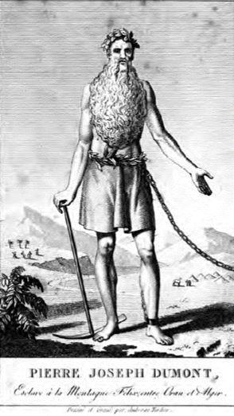

C’est une imposante tour génoise, bien connue de ceux qui aiment la Corse. Restaurée depuis quelques années, elle accueille les visiteurs en été, avec une petite exposition fort bien faite à l’intérieur… où l’on apprend entre autres que cette tour fut édifiée par les occupants Génois, à la demande de la population de l’île – fort bien – contre « la menace qui venait de la mer »… de la mer – mais encore ? Jusqu’à il y a quelques années, dans mes souvenirs en tout cas, on n’avait pas peur de dire « pour guetter l’arrivée des pirates barbaresques « Quel nom effrayant ! mais qui étaient-ils donc ? Essayons de nous souvenir de ces évènements qui façonnèrent l’Europe, avant que le politiquement correct ait tout effacé… terrible trahison des clercs !
C’était au temps des arquebuses et des galères, au tournant du Moyen-âge alors que l’artillerie et la construction navale n’avaient pas encore atteint le niveau d’excellence des 17° et 18° siècles. L’Europe se façonnait, les grandes nations se constituaient, Constantinople venait de tomber aux mains des Turcs en 1453, et les rois catholiques achevaient la Reconquista par la prise de Grenade en 1492.
Chassés d’Espagne, avides de vengeance mais désormais maitres de la côte Sud de la Méditerranée, les Maures essayaient de retrouver leurs marques – jusqu’à la bataille navale de Lépante (1571) consécutive à la chute de Chypre, et surtout le sauvetage de Vienne par la fantastique charge de cavalerie de Jan III Pobielski en 1683 qui stabilisera pour longtemps les marches de l’Europe.
Les cités d’Afrique du Nord, agrégées en quatre Etats barbaresques (Salé-Rabat, Alger, Tunis et Tripoli) sous contrôle turc nominal, se tourneront alors vers la piraterie pure et simple, à défaut de toute autre activité économique – la Méditerranée pour les galères de la régence d’Alger, la côte atlantique (jusqu’à l’Irlande, voire l’Islande) pour les ports marocains, qui se verront livrer par des renégats hollandais la technique des navires de haute mer, aptes à affronter des mers plus difficiles.
Pour leurs armateurs, pas besoin de faire le tour de l’Afrique ou de traverser l’Atlantique pour ramener les trésors des Indes : les marchandises passent au large de leurs côtes, avec des équipages éprouvés par les longues traversées de retour, par les maladies et les privations. Les primes d’assurance atteindront à certaines époques jusqu’à 40 % de la valeur des cargaisons – quant aux équipages et passagers, comme aucun musulman ne pouvait être réduit en esclavage, il y avait donc nécessité d’alimenter en population chrétienne les marchés aux esclaves… et surtout les galères.
Débarquement de prisonniers à Alger de Jan Goeree et Casper Luyken, 1706
Des régions entières seront dévastées de façon durable, par les pillages et les rapts : Baléares, Corse, Sicile, côte Provençale – La Ciotat perdra en une année 22 barques et 150 mariniers, de même à St-Tropez, et innombrables furent en Corse les razzias sur des villages de montagne (Lumio en 1540, Cristinacce en 1550, Ambiegna, …) dont a gardé trace écrite et au cours desquels, à chaque fois, une centaine d’habitants voire plus étaient emmenés en esclavage. En 1531 la République de Gênes faisant face à l’ampleur des dévastations, ordonnera la construction de quatre-vingt-dix tours de guet sur les côtes, pour prévenir de l’arrivée des barbaresques – et de personne d’autre, comme on aimerait le faire croire aujourd’hui. La physionomie du pays en sera marquée pour des siècles : les villages seront dans l’intérieur, jamais sur la côte, où seules les places fortes Génoises ayant des citadelles suffisamment solides pouvaient résister aux razzias continuelles.
Hommes, femmes et enfants, jeunes filles et jeunes garçons – ces derniers tout spécialement recherchés – seront enlevés par dizaines de milliers au fil des ans, pour finir leur vie dans la misère.
On dit encore en Corse d’un enfant pas encore baptisé, que c’est un « turchos » - et le mot « turchi » y est également synonyme de non-chrétiens comme d’ennemis féroces.
Le drapeau Corse enfin est une tête de Maure coupée et posée sur un drap, comme en Sardaigne et en Aragon, symbole de la Reconquista de cette dernière province…
Quelques points à retenir : d’abord l’existence des renégats, terme tombé en désuétude et désignant ceux qui reniaient leur foi chrétienne, pour assurer les postes techniques dans les états barbaresques (artillerie de défense de sports, capitaines de navires, mais aussi garde-chiourmes) et la pratique de la castration des hommes, qui explique encore à l’heure actuelle l’absence de communautés victimaires, à la différence des Amériques… et si les ports du Maghreb se spécialisèrent dans le commerce d’esclaves européens, la ville de Tripoli de par sa situation eut toujours une offre plus diversifiée, par le flot continu de caravanes ayant traversé le Sahara (qui se trouve ici plus étroit, moins de chemin et de grandes oasis) – et certains ont l’air surpris de ces images de vente d’esclaves en Libye qui sont apparues sur nos écrans récemment, déclenchant de vives réactions – car bien sûr, tout cela est de la faute de l’Europe n’est-ce-pas ? Il n’y eut qu’un répit de même pas deux siècles…
Certains personnages célèbres furent capturés lors de traversées de la Méditerranée – Miguel de Cervantes (auteur de Don Quichotte) rentrant de la bataille de Lépante et qui passa cinq années en captivité à Alger, Saint Vincent de Paul qui en réaction créa au retour une œuvre de rachat d’esclaves chrétiens, les Lazaristes… il y eut aussi les ordres des Mercédaires (Notre Dame de la Merci) puis des Trinitaires (Saint Pierre de Nolasque) qui se donnèrent cet objectif pendant des siècles, s’offrant même lors des négociations à prendre la place de misérables alors que les rançons étaient insuffisantes. Lisez ce qui fut écrit de Bizerte à Saint Vincent de Paul :
« Parmi les esclaves de ce lieu, outre ceux des bagnes, j’en ai trouvé quarante enfermés dans une étable si petite et si étroite qu’à peine s’y pouvaient-ils remuer. Tous sont enchaînés deux par deux et perpétuellement enfermés, et néanmoins ils travaillent à moudre du café dans un petit moulin à bras, avec obligation de moudre chaque jour une certaine quantité réglée qui surpasse leurs forces. [..] J’entendis des cris de femmes et d’enfants, entremêlés de gémissements et de pleurs : levant les yeux vers le soupirail, j’appris que c’étaient cinq pauvres femmes chrétiennes esclaves, dont trois avaient chacune un petit enfant, et toutes étaient dans une extrême nécessité ».
Les réponses des nations européennes seront variables : les royaumes italiens et méditerranéens, désunis, résisteront du mieux qu’ils pourront, en fortifiant leurs côtes et en développant des systèmes d’alerte, comme en Corse sous l’impulsion des Génois. Les pays nordiques – sauf le Danemark - choisiront de payer le tribut, les Suédois ravitaillant même les états barbaresques en canons et munitions. Par contre les marines des quatre grandes nations maritimes du moment monteront pendant deux siècles des expéditions punitives, avec des résultats variables, et parfois à l’unisson (bel exemple de coopération européenne, au même titre que les Croisades) Le prêtre et savant italien Ludovico Muratori écrira cependant, plein de regrets :
« Ce sera toujours une honte pour les puissances de la Chrétienté, aussi bien catholiques que protestantes, que de voir qu’au lieu d’unir leurs forces pour écraser, comme elles le pourraient, ces nids de scélérats, elles vont de temps à autre mendier par tant de sollicitations et de dons ou par des tributs, leur amitié, laquelle se trouve encline à la perfidie ».
Les Espagnols, premiers concernés, chercheront à prendre le contrôle de mouillages, d’ilots ou de presqu’îles. Ce sera un système de points d’appui, dont subsistent encore Ceuta, Melilla, ainsi qu’un chapelet d’iles plus ou moins symboliques tel les peñons d’Al Hoceima et de la Gomera (celui d’Alger ayant été pris après un long siège en 1529, le vieux gouverneur Don Vargas qui refusait de se convertir à l’Islam après sa capitulation, étant mis à mort sous la bastonnade) S’ils arrivent à occuper de larges pans d’Afrique du Nord (Rif, Ifni, Sahara espagnol) ils essuieront par contre de cuisants échecs, d’abord devant Alger en 1541 avec une grande expédition menée par l’empereur Charles Quint en personne, puis de nouveau au même endroit en 1783 et 1784.
La France de Louis XIV, première nation d’Europe au 17° siècle, ne pouvait se désintéresser de cette piraterie sanguinaire. Appelée à l’aide, elle cherchera d’abord en 1664 à s’emparer de Djidjelli à l’est d’Alger pour en faire un point d’appui. Victorieuses au début, les troupes du duc de Beaufort cousin du Roi devront rembarquer, la peste arrivée à Toulon bloquant les convois de ravitaillement. La piraterie ne faiblissant pas, l’amiral Duquesne bombardera Alger en 1682, puis surtout 1683 (546 esclaves libérés, bien peu au regard des dizaines de milliers présents) C’est lors de cette bataille que le consul de France Le Vacher aura été attaché à la bouche d’un canon pointé vers l’escadre française et déchiqueté, suivi d’une quinzaine de ses compatriotes. Ce canon, la Consulaire, est depuis 1830 dans l’arsenal de Brest dont il ne devrait plus sortir... Le pouvoir algérois étant infiniment fluide – le pacha de Constantinople n’exerçant qu’un contrôle nominal, à travers les Janissaires qui se complaisent dans de sanglantes révolutions de palais – l’amiral d’Estrées devra revenir en 1688.
Plus à l’Est, Tripoli sera bombardée en 1685, puis 1728 sous Louis XV cette fois, sans grand succès de nouveau… l’artillerie des vaisseaux était alors bien faible contre la terre, mis à part les galiotes à bombes dont les munitions étaient aussi dangereuses pour les servants que pour l’ennemi, et on ne pouvait espérer de résultats durables tant que l’on n’occuperait point ces nids de pirates. Quant à l’Atlantique, les ports marocains n’y sont que de simples estuaires, protégés par la barre et les bancs de sable, ce qui en interdit l’accès aux vaisseaux – et il faut y pénétrer avec des chaloupes et des équipes de débarquement … Entre 1670 et 1680 se succèderont sans succès le long de cette côte Jean Bart, Château-Renault, et seul en 1737 devant Salé, le marquis d’Antin aura réussi à libérer 751 esclaves chrétiens. Mais quatre ans plus tard au même endroit, l’amiral du Chaffault perdra près de 300 hommes et toutes ses chaloupes, les ayant envoyés dans le piège de l’estuaire où ils furent bloqués par le courant de marée montante, sous le feu des Maures... Les survivants seront suppliciés de manière atroce, quelques-uns emmenés en esclavage dans le désert furent malgré tout rachetés par la suite et purent raconter…
Le cas des Américains est plus singulier : dès l’indépendance de leurs états, ils commenceront par payer tribut aux états barbaresques… pour changer d’avis très vite devant la continuation des attaques, et les sommes exigées, énormes pour une jeune nation. En 1786, Thomas Jefferson, ambassadeur américain en France, et son collègue John Adams ambassadeur à Londres, ont une entrevue avec l’ambassadeur de Tripoli en visite.
Demandant pourquoi leurs vaisseaux sont attaqués hors de toute guerre, ils s'entendent répondre que « d'après le Coran, toutes les nations qui n'ont pas reconnu Mahomet sont pécheresses, et qu'il est donc légitime de les piller et de réduire leurs peuples en esclavages, sauf si elles acceptent par traité de payer des tributs » Ce n’était pas un bon départ ….
Le Naval Act de 1794 créant l’US Navy sera une réponse à ces agressions continuelles, le tout conduisant aux premières et secondes Guerres Barbaresques : les US Marines nouvellement créés débarqueront à Tripoli en 1805 (on en cite les rivages dès le deuxième vers de l’hymne de l’USMC) et un traité de paix final sera signé en juillet 1815 (deux semaines après Waterloo, France et Angleterre étant occupées ailleurs…).
C’est cette même Angleterre que nous allons très vite retrouver : comme les autres nations, elle avait pris sa part de la lutte (bombardement de Tunis en 1675, d’Alger en 1682) Dès la fin des guerres napoléoniennes, s’étant engagée à cette époque à lutter contre l’esclavagisme des Africains, certaines nations des plus exposées lui reprochèrent vite d’en faire beaucoup moins pour les esclaves chrétiens du Maghreb… ceci, plus le congrès de Vienne durant lequel les puissances européennes souhaitèrent enfin mettre de l’ordre en Méditerranée, conduisit à la mémorable expédition de lord Exmouth en 1816, qui après quelques tentatives de négociation ne put finalement accepter la mise à mort de centaines d’otages (corailleurs italiens de la Calle notamment) et se décida à bombarder Alger avec le renfort d’une escadre hollandaise.
Cette fois le succès fut au rendez-vous, et même si beaucoup des vingt mille esclaves estimés avaient été évacués dans les montagnes, près de deux mille d’entre eux retrouvèrent la liberté – dont le Français Pierre-Joseph Dumont qui après un martyr de trente-huit ans, entendit ce jour-là parler pour la première fois de Révolution française et de Napoléon !
« Ceux qui vivront quatorze années encore verront luire, eux aussi, l’aurore radieuse de la liberté, lorsqu’en 1830 les vaisseaux et les soldats du roi de France viendront délivrer l’Algérie. Ce jour-là, les derniers fers tomberont ».
Je n’ai pas pu m’empêcher de reproduire les dernières lignes de « Croisade et Croisière » de l’immense Paul Chack…
Christiane Taubira, tristement connue pour son rôle dans la culpabilisation de générations de Français vis-à-vis de la traite atlantique, s’opposa par contre de la manière la plus ferme à ce que l’on enseigne parallèlement cette traite européenne que nous avons tenté de ressortir de l’oubli – afin disait-elle, que les « jeunes immigrés du Maghreb ne portent pas sur leur dos tout le poids de cette culpabilité « On l’avait connue plus vindicative sur d’autres sujets ! Puisse au moins le lecteur regarder d’un autre œil désormais le retour des marchés d’esclave en Afrique du Nord, qui a tant fait scandale récemment…

Partager cette page